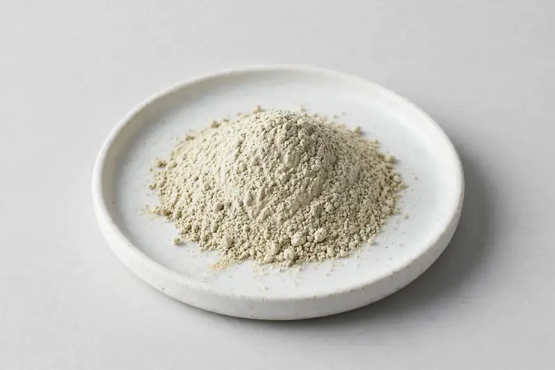

Chia Seed — Salvia hispanica seed ingredient positioned around omega-3 ALA and fiber content for functional food formulations.

Overview
Chia seed extract is derived from Salvia hispanica seed and is used for its omega-3 ALA and dietary fiber content in functional food and bakery concepts. Buyers most often request specifications that reference ALA and fiber levels, and the material is frequently supplied as a milled or concentrated seed powder. Demand is steady across nutrition and bakery categories. As a Xi'an-based trading company, we source through vetted partner producers and confirm feasibility against each buyer's target specification.
Specifications below reflect commonly requested options in the market — not a stock list. Share your target spec and we'll confirm exactly what we can supply, honestly.
| Specification | Details |
|---|---|
| Botanical identity | Chia seed powder or extract (Salvia hispanica seed) |
| Marker compound | Commonly requested spec ranges: omega-3 ALA content and dietary fiber content; assay scope agreed per buyer specification |
| Appearance | Grayish-cream fine powder |
| Mesh size | Typically 80–100 mesh (confirm per inquiry) |
| Testing | COA/TDS arranged on request; scope agreed per your spec |
Applications
Documentation
We don't claim in-house labs or certifications we don't hold. COA and TDS documents can be arranged on request, and testing scope is agreed against your specification before supply.
FAQ
Related products
L-Citrulline
Key marker: 99%+
View specs →Bromelain (Ananas comosus)
Key marker: 2000-3000 GDU/g
View specs →Papain (Carica papaya)
Key marker: USP activity units
View specs →Cannabis sativa
Key marker: Protein & Omega-3
View specs →Linum usitatissimum
Key marker: Lignan (SDG) & Omega-3
View specs →Send your target spec and volumes — we'll respond with a tailored quotation.
Request a Quote